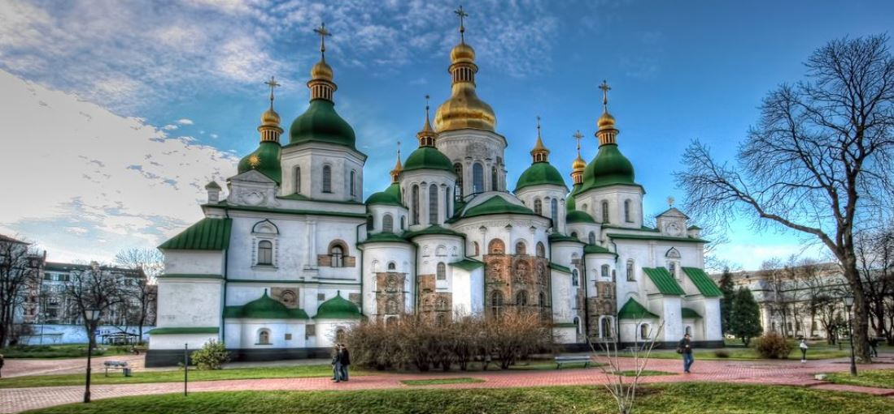
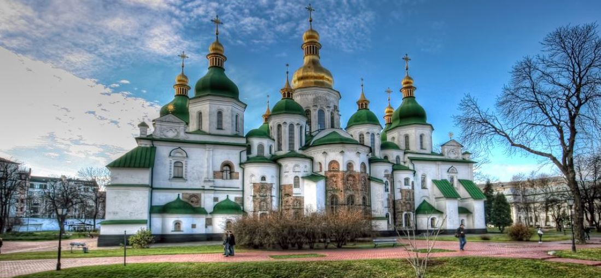
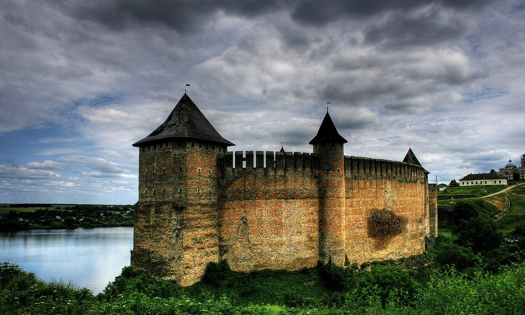
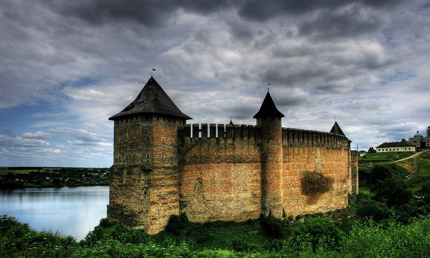

Про проєкт
Мій проєкт присвячений збереженню та дослідженню історичних будівель та храмів України. Я прагну поділитися цінною інформацією та відеоматеріалами, що відображають багатство культурної спадщини нашої країни.
Цікаве про Софію Київську
Софія Київська – перлина давньої Русі Софія Київська – один із найдавніших і найвизначніших храмів України, закладений у 1037 році князем Ярославом Мудрим. Це велична пам’ятка архітектури та мистецтва, що увійшла до списку Світової спадщини ЮНЕСКО. Архітектура та розпис Храм побудований у візантійському стилі з елементами давньоруської архітектури. Внутрішнє оздоблення вражає унікальними мозаїками та фресками XI століття, серед яких особливо виділяється знаменита мозаїка Оранти – Богоматері, яка, за легендою, оберігає Київ. Історична роль Софія Київська була не лише духовним, а й політичним центром Київської Русі: тут приймали послів, укладали важливі договори, а також зберігали літописи. Сучасність Сьогодні Софійський собор є музеєм-заповідником, відкритим для відвідувачів. Він залишається символом української культури та духовності.

 

 
